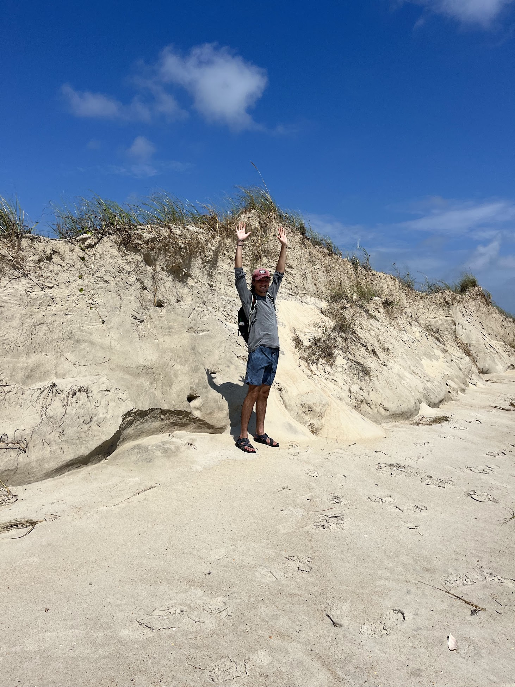
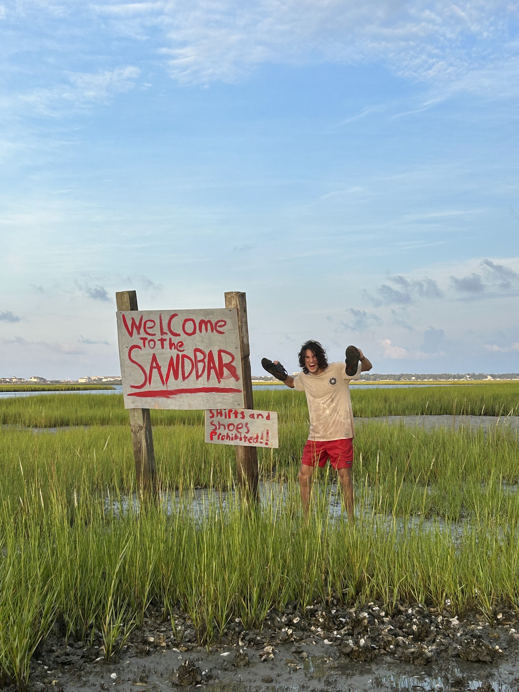
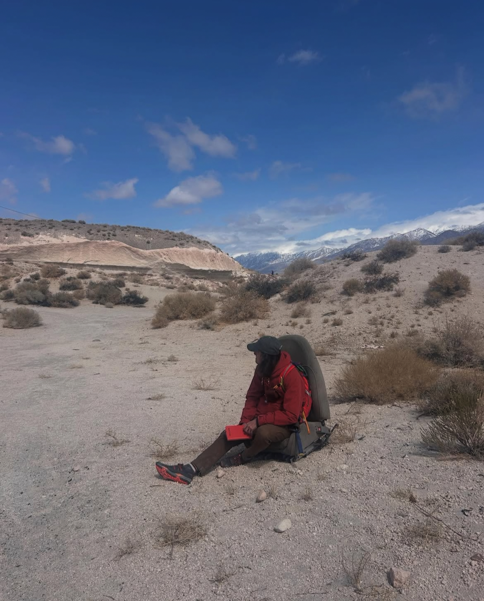
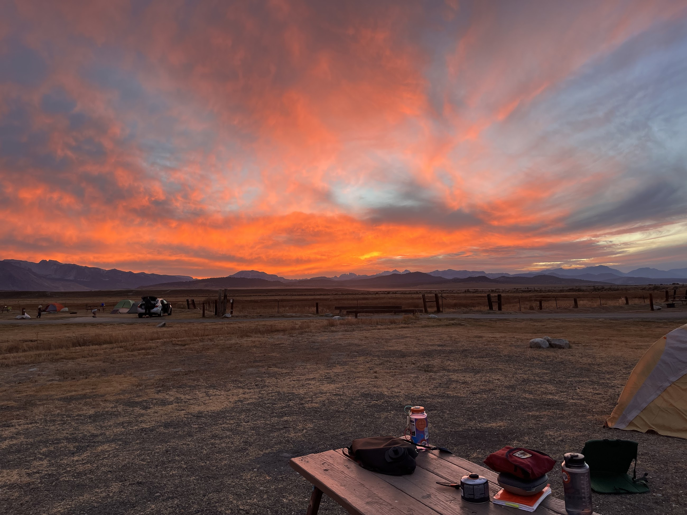

Ph.D. Marine Geology, University of California, Santa Barbara (2026–present)
A.B. Geosciences, Princeton University (2022–2026)
I am a doctoral student and UC Regents Fellow in the Department of Earth Science at The University of California, Santa Barbara. . At UCSB, I work with Prof. Alex Simms to study the evolution of the Southern California Coast under increasing rates of sea level rise and storminess using near-surface sediment cores, radiometric/radiogenic and luminescence dating, and shallow-sounding geophysical methods.
I earned my bachelor's degree in Geosciences from Princeton University. Advised by Professors John Higgins and Frederik Simons I studied the processes by which long-burried sediments become decoupled from their source expression both geochemically and physically. My thesis explored the disappearance of an ancient ocean in Mars' Utopia Planitia. Specifically, I investigated and proposed alternate hypotheses on the environment of formation for the complex progradational stratigraphy of (purportedly coastal) deposits imaged by the Tianwen-1 Ground Penetrating Radar.
Research
My research probes Quaternary coastal and depositional environments to explore
environmental response to, and modulation of, threats induced by
global-scale climate shifts and small-scale (and anthropogenic) aberrations.
What can long-buried sediments tell us about how coastal systems, and
the communities they host, will change under rapid fluctuations in
sea-level, storminess, and development? How do these records lie? And
how can we decouple post-depositional processes from the true story?
To pursue these questions, I employ a variety of techniques in
sedimentology, absolute dating, remote sensing, and geophysics.
Computer code, whether for modeling, processing and inversion, or
visualization of these data, sneaks its way into everything I do.
Software
I strive to write code that is concise, well-documented, and
reproducible, using the PEP8 style as a guiding principle.
All of the software and scripts relevant to my research are made freely
available on GitHub, though I
should note that not everything posted there is polished for re-use, and I am working on a more formal open-source catalog inspired by that of Professor Frederik Simons. Please feel free to use and modify my codes with credit if they are helpful. Additionally, please reach out with feedback or issues regarding collaboratively-maintained projects.
Despite the fact that active coastal margins are occupied by a
significant portion of the world population, the ability to reliably
detect, quantify, log, and map the extent of tsunamis extends only as
far back as the development of their modern instruments. Beyond the
mid-19th century, tsunami records are constrained by the availability
of historical documents and written first-hand accounts.
The coastal plain morphology, underlying geologic structure, and
modeling of the Santa Barbara Fold Belt all suggest inundation by
tsunamis in the geologically recent past, but evidence of their
existence remains to be found. My research investigates sediment
cores from backshore lagoons and estuaries along the Southern
California coast for signals (facies character, grain size and age)
of marine inundation.
Sand lenses in mud laminations deep in one core from Andree Clark, Santa Barbara, suggest possible biotic activity durring a breif low-energy hiatus greater than 3.2kya.
Publications
Conferences
Rodriguez, C. & Simons, F. J.Waves On Mars: Imaging
The Retreat Of An Ancient Ocean In Mars’ Utopia
Subsurface,
HMEI Discovery Day, 2026
Rodriguez, C. & Nadeau M. D. How Has Fabric-Selective
Diagenesis Impacted The Chemistry Of Shallow Water
Carbonates In Early Cretaceous Anoxic Events?,
AGU Fall Meeting, 2025
Gallery

These spectacular dune scarps on Shakleford Banks, NC
showcase barrier islands at work!

My academic phylogeny is strongly traced by the work of
the many graduate student and faculty mentors for whom I am
grateful have stoked my aspirations as a young
computer-scientist, turned geologist. This is a picture from
2022, collecting sea grass push-cores in Core Sound, North
Carolina with Students from the UNC Institute of Marine
Sciences.

I am lucky to frequent the Basin and Range Province for
UCSB field trips. Perhaps here I am pondering the spectacular
Bishop Tuff stratigraphy in the background.

Evenings at Browns Owens campground. 2026 Pacific cell
Friends of the Pleistocene was awesome!